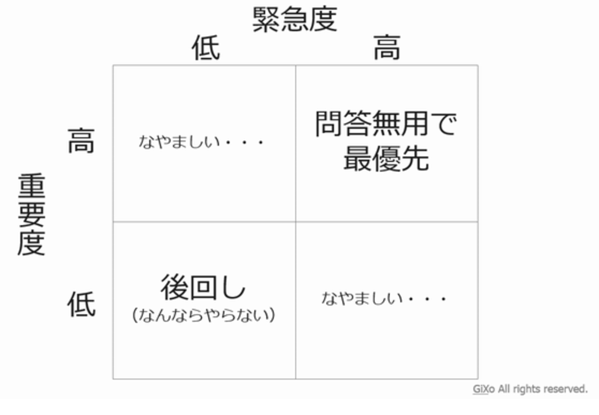

効率的な仕事ぶり？ 充実してる？私生活
夜遅くまで仕事をして家族の誰よりも遅く帰り眠る。
朝は誰よりも早く起き、また誰よりも遅く寝る。
そんな生活していませんか？
今、ここから変えましょう。あなたに「生産性」を高める方法をプレゼントします。
what's 生産性?
今回の「生産性」とは「かけた時間に対する成果物の質の高さと量」と定義します。
とても簡単に言うとコストパフォーマンスのことですね。
そして、今回は時間管理術の観点から生産性を高める方法を学んでいきたいと思います。
では、よくある話を題材にどういうことかを説明します。

ちょっと待って！よくある間違い
バリバリ働いて、夜遅くにやっと家に帰宅。「でもまだ仕事が…」と睡眠時間を削って仕事をしていませんか？
実は生産性の観点から見ると大損失をしています！！
人は直感的に「時間」を直線的に続く一本の矢印のように捉えています。
その場合、「仕事での成果物の質と量＝かけた時間」ですから、
時間があればあるほど、仕事は片付いていく。だから睡眠時間を削るといっぱい仕事ができますね。
しかし！この一本の矢印である「時間」に「集中力」という別方向の矢印を足して捉えて見るとどうでしょう？！
写真で見るところの「仕事の質と量＝面積」になりますね。
では、この捉え方で睡眠時間を削ることは何を意味するでしょう？
実は、1日単位での「集中力」を低下させていたのです！
それによる損失は失った集中力×1日ですから、圧倒的な損失になるわけです。

ですので、毎日しっかりと睡眠時間を確保し、集中力をリセットしましょう。
定義の再確認
生産性とはかけた時間に対する成果物の質の高さでしたね。
そして、簡単に表すなら先ほどの図の面積をいかに高めるかです。
ここで、「面積＝集中力×時間」ですから、それぞれ集中力と時間に関して、生産性を高める方法を学んでいきます。
①集中力を活かす
(a)集中力の高い時間を有効に使う
朝起きて、あなたは何をしますか？メールチェックをする。テレビを見る。などと連想した人は要チェックです！
1日の中で、集中力の高い時間と低い時間、また、集中力が必要なことと必要のないことが存在します。
ここでは、集中力という切り口から、集中力がどれだけ必要な仕事（what）なのかといつ（when）集中力が高いかを知り、最適化することを学びましょう。
重要度、喫緊性に加え、集中する必要性があるかによるスケジューリング
こんな図を見たことがあったり、使ったりしている人は多いんじゃないでしょうか？
「集中力」が必要なものかどうかをここに組み込むことで、タスクを集中仕事と非集中仕事に分けることができます。
そうすると、メールの返信などは明らかに非集中仕事ですね。それを集中できている時間に使ってしまっていては、集中力の無駄遣いです。
では、集中力が高いタイミングとはいつなのか？
知り、組み込んでいきましょう。
集中力が高い時間を知り、組み込む
一般的に集中力の高いゴールデンなタイミングは以下の４つだと言われています。
(b)集中力を回復させる
「集中力を高める」はできない
実は集中力を高めることはとても難しい。アスリートですら、自分の集中力を高めるためにずっとトレーニングをしていますね。
一般の成人ができるはずもありません。
しかし、集中力を取り戻すことは簡単にできるのです。
100→120は難しくても40→90は簡単なのです。

休憩を取る。睡眠を確保する。
とても休憩は大事です。侮ってはいけません。
ある精神科医によると15分、45分、90分が人間が集中できるちょうどいい周期であり、自分にあった周期を見つけること推奨します。
②自分にとって無駄な時間を削る
あなたは一昨日は何時に起き、何時に家を出て、何時に帰宅しましたか？家を出てから帰るまで具体的に何に何分ずつ使いましたか？
覚えていないですよね。人間の記憶力はそんなものです。
もし自分が何に何分を使っているかわかるとしたら？わからないものは改善のしようがありません。
しかし、もしわかっていたなら自分の時間の使い方を見直し、修正することができます。
ここからは、他の誰でもない自分の時間を有意義に使う方法を学びしょう。
(a)まず、計測し、見える化する
まずは、自分の時間の使い方を見える化することから始めましょう。
このツールを使ってください。

ツールの使い方
使い方は簡単！３０分単位で自分が毎日何をしていたかを記録するだけ！
ここでポイントなのが、自分のとってその時間が良いものなのか、悪いものなのかを評価して色をつけて分けてください。
僕の場合は左の写真のように、良い時間を赤系、悪い時間を青系にしています。
(b)自分にとって無駄、必要のないと思える時間を把握し、削る

では、計測したあとにどうするのか？
一週間記録を続けて見ましょう。自分の一週間が丸分かりになります。
その中で、自分にとって無駄だと思える時間はありますか？
あるとしたら、その時間は減らせそうですか？
減らせるとしたらどうやったら減らせそうですか？
後は実行するだけです。何回でもチャレンジしてどんどん無駄な時間を削りましょう。
※左の写真は変化をわかりやすくするために1日単位で切り取っています。
赤系統が良い時間の使い方だと思うもの。青系統が悪い時間の使い方だと思うもの。
この変化が生まれたのは、前日の時間の使い方が良くなかったからこそ。
メッセージ
ここまで、生産性に関して勉強してきました。
あなたはなんのために生産性を高めますか？
あなたが自分の人生で大切にしたいことはなんですか？
あなたはどんな時間を削り、どんな時間を増やしますか？
これを機に、自分の胸に手を当てて聞いてみてください。
あなたの人生にとって、絶対なくてはいけない大切なものはなんですか？
あなたの人生はあなたのものです。
自分の人生を誰よりも自分が主人公でいてください。一度しかない人生。
もう一度味わいたいと思えるような人生にしましょう。
「人生を最高に旅せよ」byニーチェ
参考文献
説明！
説明！
合わせて読みたい
説明！
説明！